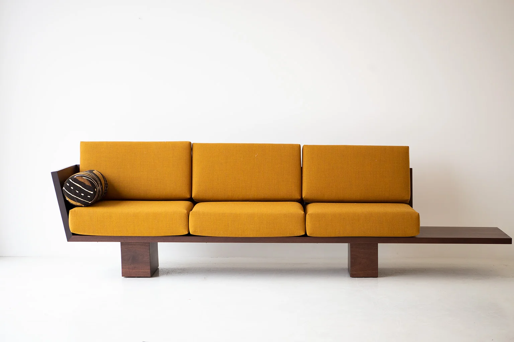
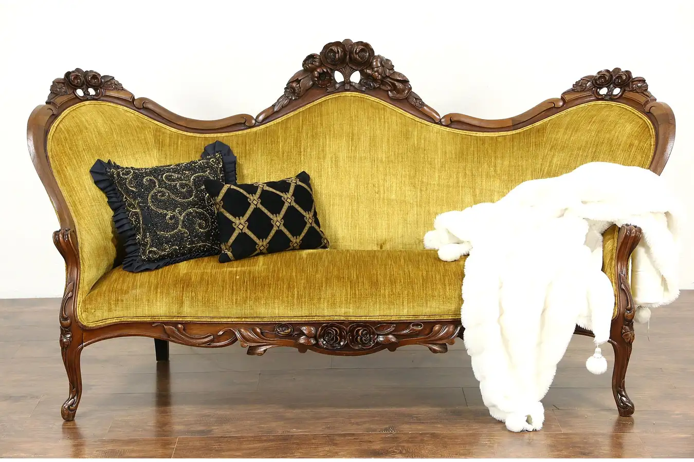
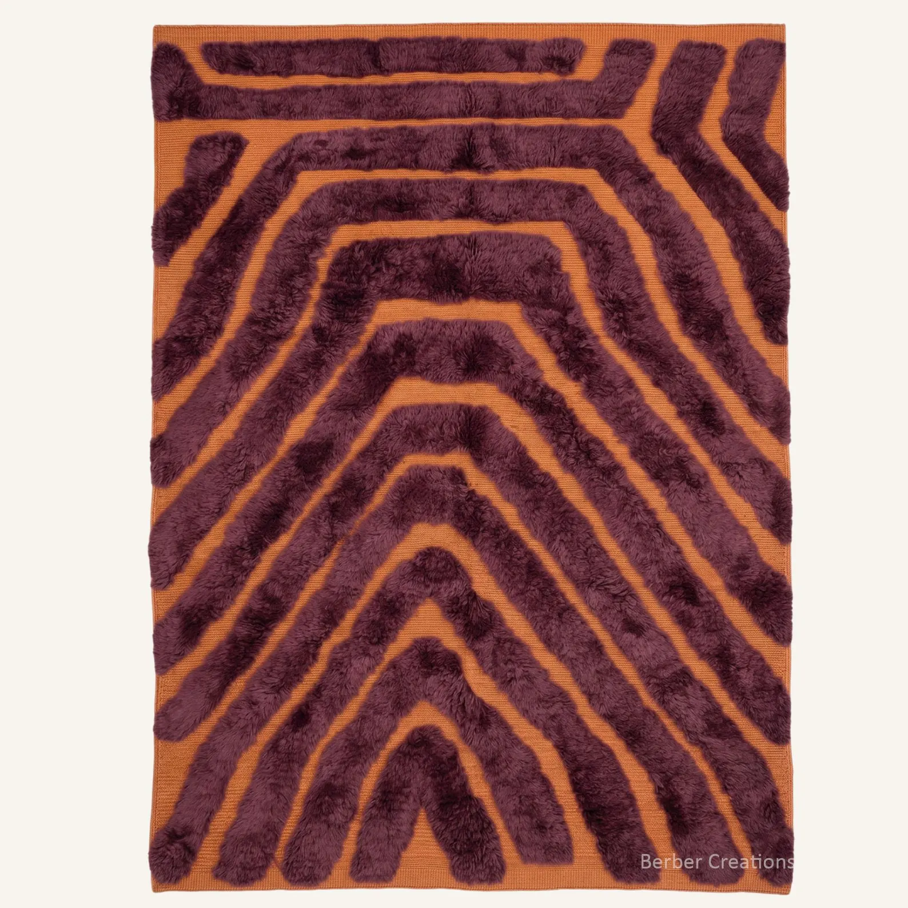
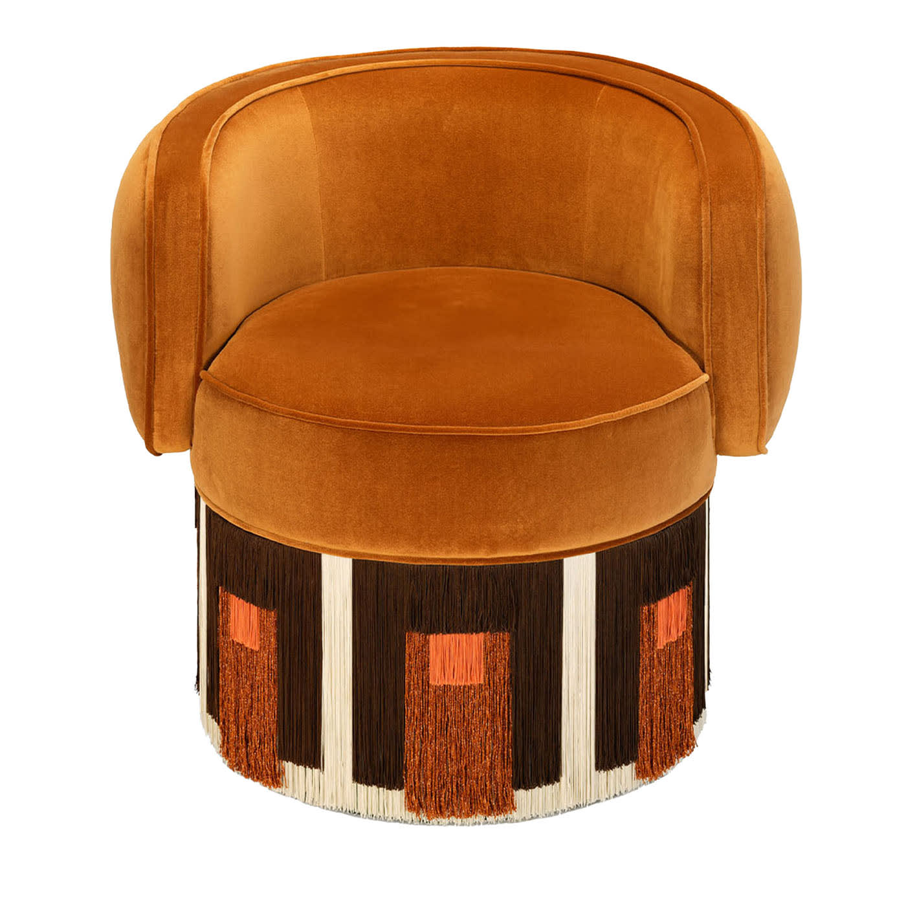
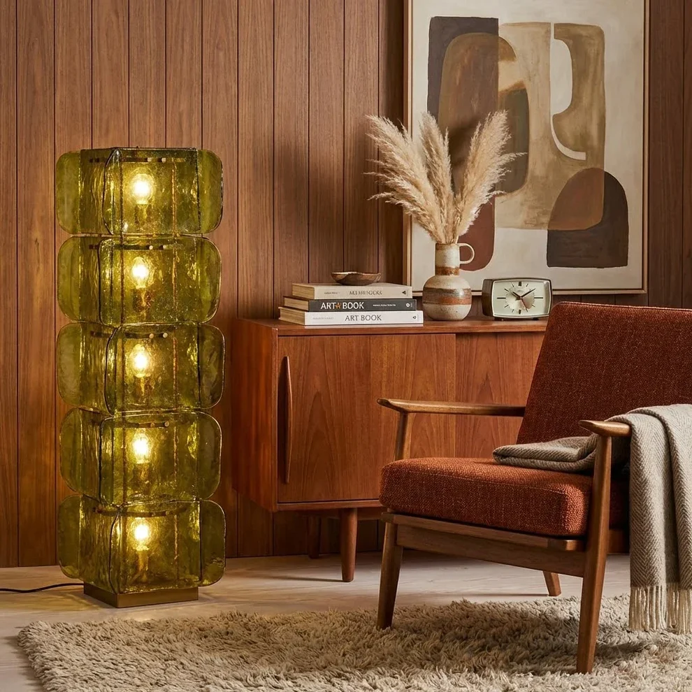
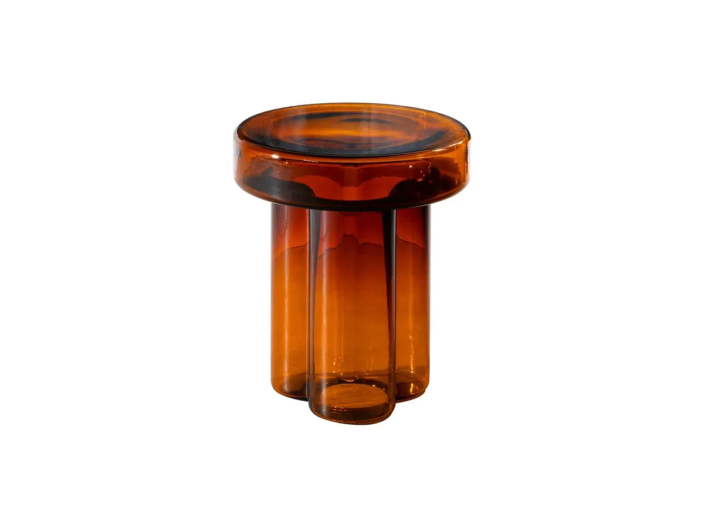
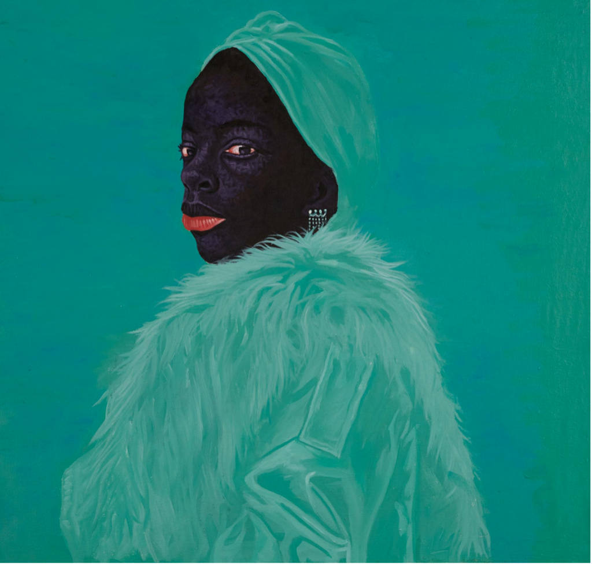
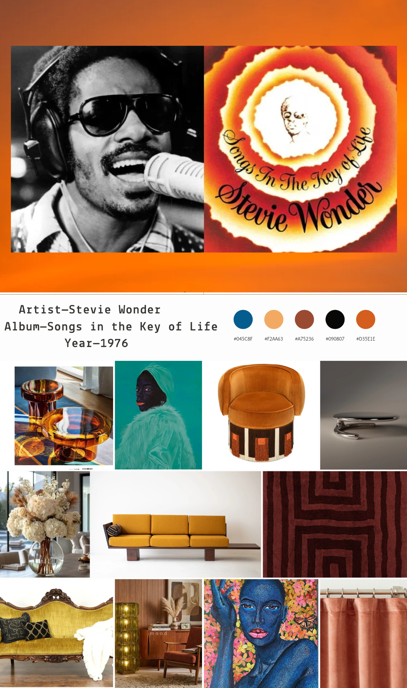

Songs in the Key of Life
Your favorite artist’s favorite artist’s favorite artist. That’s right. The legend himself—Stevland Hardaway Morris. Stevie Mother Freakin’ Wonder. Finally.
And we’re talking about his classic album Songs in the Key of Life for its 50th anniversary.
Mr. Wonder is currently touring the country, and if you are one of the few lucky enough to score tickets, I want to let you know how jealous I am. Although I did have the opportunity to see him (and George Benson, among others) at the Hollywood Bowl in 2025, and he tore the non-existent roof off the mother. That’s actual and factual.
Stevie Wonder has no peers. There’s just him and then everybody else making music.
To honor this classic album and this musical genius, we wanted to innervision what it could look like to turn this album into a conversation pit—straight from the 1970s!
Starting with this stunning Suelo Modern Wood Sofa in solid walnut, with its modern construction juxtaposed against the hand-carved roses of this antique Victorian lounger in golden velvet. Taking a cue from “Village Ghetto Land,” where Wonder uses the synthesizer technology of the mid-1970s to create a string arrangement that sounds like he’s having a cosmic jam session with Beethoven, we’re bringing a little old-world opulence into our modernist conversation pit.


Next, this burgundy and orange Moroccan rug evokes the repeating, concentric patterns of the album artwork, while this Art Deco Cognac Velvet Pirouette Cleo Swivel Armchair by Lorenza Bozzoli Couture adds some playful whimsy to the room.
Could this be the room where a young Michael Jackson would hang out with his older cousin Stevie and be inspired to release his own classic album just a few years later?


For lighting, this stacked green-glass floor lamp sets the mood and pairs well with these sculptural amber side tables that suit our ’70s soul aesthetic just right.


We couldn’t complete the room without honoring the very special women in Wonder’s life around this time through art. Green Fluffy Coat (2020), an acrylic painting on canvas by Ghanaian artist Kwesi Botchway, evokes the spirit of the late, great Syreeta Wright, who was married to Stevie from 1970 to 1972 and also collaborated with him on music projects.
The other painting we selected—Oguyo by Kenyan contemporary artist Lee Amimo (also known as Michael Leonard Amimo)—represents the birth of Wonder’s daughter Aisha, whom he celebrates in his classic song “Isn’t She Lovely.”

Here is our finished project below…

So how did we do? Let me know your thoughts. And if you’d like to see a room inspired by your favorite album, please reach out directly to I Spaced Out with suggestions.
Credits
- Album: Songs in the Key of Life — Stevie Wonder, Tamla Records, 1976.
- Suelo Modern Wood Sofa in Solid Walnut — Bertu Home
- Victorian 1860 Antique Walnut Sofa, Hand Carved Roses — Harp Gallery
- Beni Mrirt Geometric Berber Wool Rug — Berber Creations via eBay
- Art Deco Cognac Velvet Pirouette Cleo Swivel Armchair — Lorenza Bozzoli Couture via Artemest
- Vetra Green Glass Column Floor Lamp — Baskoraa
- Soda Side Table, Amber — Miniforms via Finnish Design Shop
- Green Fluffy Coat (2020), acrylic on canvas — Kwesi Botchway via Gallery 1957
- Oguyo, painting — Lee Amimo via Artmajeur
- Opening photograph: cropped from the supplied collage; original photographer not identified.
- Additional collage imagery: source credits not supplied.